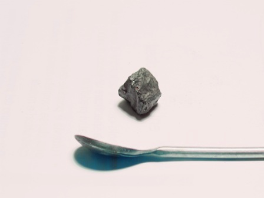
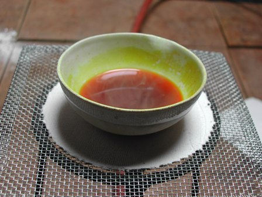
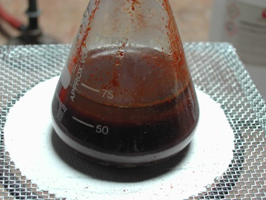
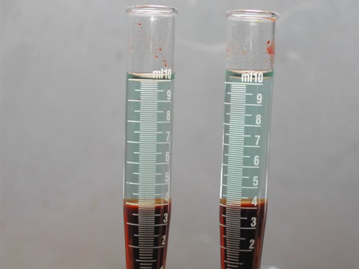
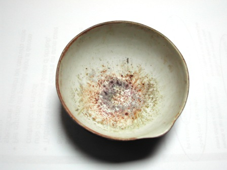
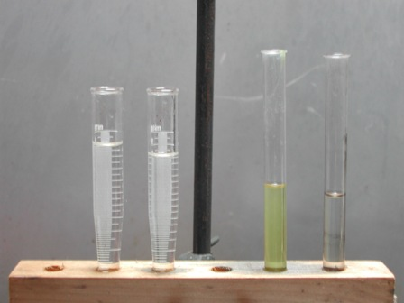
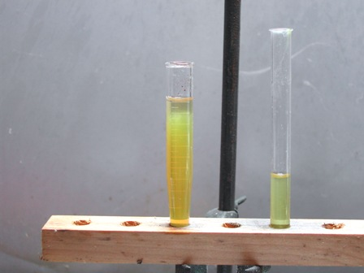
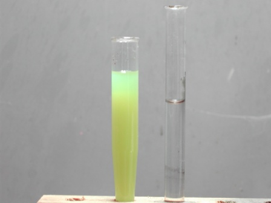

Finalmente la lunga lezione in cinque puntate del Prof. Catullo è finita e possiamo tornare a noi.
In ogni caso abbiamo imparato in dettaglio (o almeno l'ho fatto io) quanto fosse laboriosa l'estrazione del rame da un suo minerale povero come le piriti cuprifere agordine; laboriosissima direi, in tempi tecnologicamente carenti come quelli oggetto degli scritti precedenti.
Il Prof. Catullo ci ha dimostrato che si fa presto a dire: ... arrostimento del minerale... riduzione con carbone... un po' di passaggi, tic e tac... et voilà il lingottino di rame!
Nossignori, la musica, quella PRATICA da suonare sul campo, era (è) molto diversa e decisamente difficile ad eseguirsi!
Ecco uno dei cubetti di minerale residuo di fusione che Marco mi ha mandato, con lo scopo di farmi giocare un po' con le provette... e naturalmente io l'ho preso in parola!

Il campione si presenta semivetrificato, molto duro e verosimilmente dovrebbe essere composto prevalentemente da una scoria a base di silicato ferroso; ne ho pesato dei frammenti per un totale di 3 g proponendomi lo scopo di verificare grossolanamente, con i miei metodi antichi, quanto rame contenesse come residuo.
Ho posto i granellini in un eccesso di HCl con qualche goccia di HNO3 e lasciato dissolvere a caldo e a freddo; come previsto la dissoluzione è stata lenta, difficile e parziale e la quantità passata in soluzione (per differenza) è stata di 0,92 g.
Ecco la soluzione acida dopo la separazione del solido indisciolto; dalla colorazione non vi è dubbio che vi sia ferro in grande abbondanza!

Per separare il ferro dal rame ho parzialmente evaporato (non arrivando a secco) per eliminare la maggior parte degli acidi residui, poi diluito opportunamente e ripreso alla fine con un eccesso di ammoniaca.
In tal modo il ferro precipita tutto come idrossido ed il rame viene complessato come Cu(NH3)4(OH)2
Ecco il prodotto dopo il trattamento con ammoniaca:

Ora occorre separare la soluzione rameica (ammesso che ci sia, finora certamente non si vede) da tutto quell'idrossido gelatinoso e questo è indispensabile farlo per centrifugazione perchè per semplice filtrazione sarebbe impossibile.
Ho pertanto messo in azione la mia centrifugaccia autocostruita dividendo la sospensione in più porzioni fino a separare perfettamente l'idrossido dal liquido ammoniacale limpido. Eccolo, ed è apparso anche il colore azzurro del complesso.
Il rame c'è!

Ho riunito tutti i centrifugati e posto in capsulina ad evaporare a caldo, per eliminare l'ammoniaca e trasformare il complesso in ossido rameico secondo la reazione:
Cu(NH3)4(OH)2 + 2 NH4OH --> CuO + 6 NH3 + 3 H2O
Ecco il risultato:

La crosticina di ossido di rame si vede bene in foto, ma in pratica è risultata una patina sottilissima, impossibile da staccare ed imponderabile, almeno per i miei mezzi.
Qualche milligrammo inchiodato alla capsulina, non di più.
(Lo so che si poteva far meglio: in crogiolino, pesando prima e dopo, eccetera)
Ho sciolto pertanto il residuo con un po' di HCl, ottenendo una bella soluzione verde (conferma del complesso tetraclorocuprato CuCl42-) che è passata ad incolore per diluizione con qualche ml di acqua data la minima quantità di rame presente.
Ho neutralizzato con poco NaOH fino a incipiente precipitazione di Cu(OH)2 e con qualche goccia di acido acetico ho portato il pH appena appena acido, per eseguire il test con l'etilxantato.
Ho già parlato di questo bellissimo saggio per il rame (link) ed l'ho voluto usare sia per la sua sensibilità sia perchè mi è particolarmente simpatico.
Le quattro provette seguenti contengono da sinistra rispettivamente due soluzioni con qualche goccia di soluzione da esaminare, la soluzione di etilxantato di potassio (CH3-CH2-CS-SK) e la soluzione con quel poco di CuCl2 derivante dal minerale.

Le due immagini seguenti mostrano la conferma del rame come intorbidamento giallo aggiungendo il reattivo; la seconda foto mostra il precipitato formatosi dopo cinque minuti.
Le reazioni con l'etilxantato non sono specifiche (molti metalli colorano con il reattivo, ved. link sopra) ma nel nostro caso era presente (a parte tracce di ferro) solo rame quindi il test lo considero del tutto puntato sul rame.


E cosa si evince da tutto quanto sopra?
1- Che mi sono divertito a fare questa analisi, con l'accuratezza non certo da lab istituzionale ma sufficiente per i miei scopi
2- Che il rame è effettivamente presente nel residuo di fusione di Marco, ma che è in quantità minima, segno che la maggior parte (come volevasi!) è passata a suo tempo nella "metallina" e quindi non è finita nella scoria.
Ovvio, si dirà. Ovvio, certo. Ma ho voluto verificarlo, altrimenti chi sporca più provette di questi tempi?
2 commenti